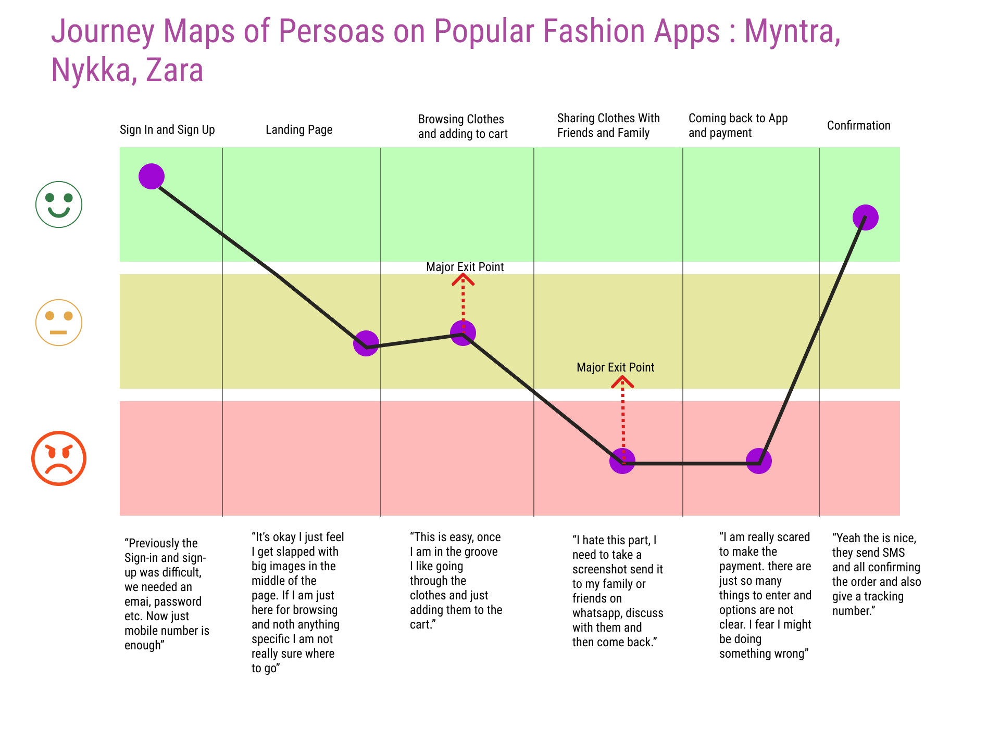
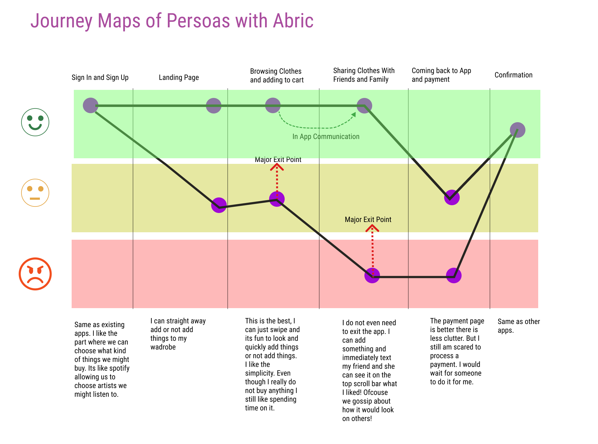
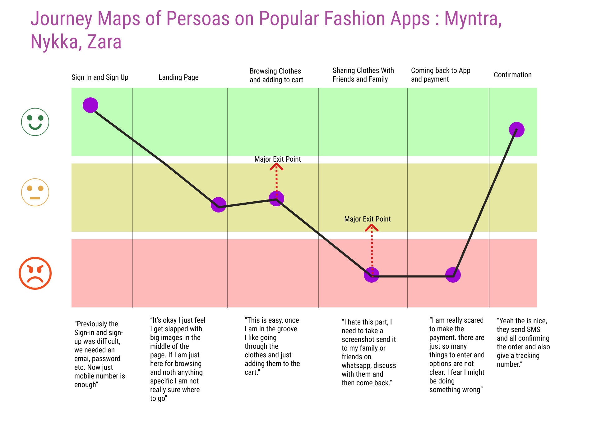
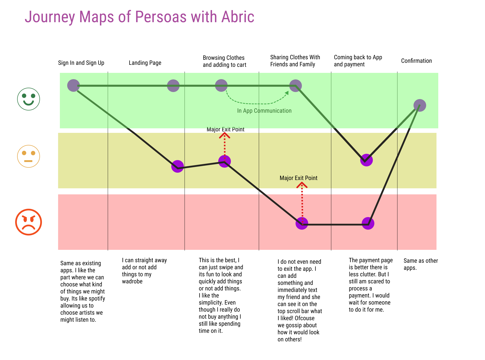

A UX Case Study for Enhancing Online Fashsion Shopping Experience


 



Sai Siddartha Maram
UX/UISai Siddartha Maram
Tags
Qualitative Research, Figma,
What is this!
A Qualitative Study aimed to identify pain points in shopping experiences of Indian Women. I performed user interviews, developer personas. We built journey maps of these personas and identified pain points. This Qualitative Study is followed by developing a concept application to address these pain points. (work in progress)
Captain Bohr-Curie.
Sai Siddartha Maram
Tags
Unity, HCI, Education
What is this!
Chemistry is thought across the world. But the access to platforms and technology (AR/VR) to visualize and help in memorizing chemistry concepts is limited to few first world countries. We Introduce a cross platform 2D mobile game. Which helps students to learn, visualize and memorize concepts. Captain Bhor our male protagonist or Captain Madame Curie our female protagonist move around various Zones in a story built carefully to align with chapters in the textbook or concepts in chemistry. For example, a level beside the sea shore would discuss about Sodium, Magnesium Salts, their reactions. Each Zone has games built to strengthen memory and visualization of the concepts involved.
Motivation and Impact
Chemistry is one of the core subjects when it comes to preparation for Graduate school. Students between the age of 12-16 undertake chemistry classes for preparation of their SAT, JEE, ICho and other competitive examinations. Certain areas in the subject involve a component where a student has memorize a lot of concepts. There have been studies statistically measuring what percentage of students find chemistry hard and also their reasons. This project/research aims to address the reasons. This research proposal aims to use gaming as a modality to blackuce the negative affinity towards chemistry.
Sense.
Sai Siddartha Maram
Tags
Unity, HCI, Education
What is this!
The rise in Online education and Distance Education has taken a toll on Physical Fitness and Physical Training Education. Staying at home also increased screen time for students. We explore ways to use screen time of students to indulge them into physical fitness. We use game motivational models to allow users develop intersts towards fitness based games.
Motivation and Impact
Chemistry is one of the core subjects when it comes to preparation for Graduate school. Students between the age of 12-16 undertake chemistry classes for preparation of their SAT, JEE, ICho and other competitive examinations. Certain areas in the subject involve a component where a student has memorize a lot of concepts. There have been studies statistically measuring what percentage of students find chemistry hard and also their reasons. This project/research aims to address the reasons. This research proposal aims to use gaming as a modality to blackuce the negative affinity towards chemistry.
Traffic sign condition assesment using 3D LiDAR point clouds.


Transportaion Lab: GeorigaTech
CodeSai Siddartha Maram
Tags
Tkinter, Python, LiDAR
What is this!
This project was finished under Dr. Yi-Chang (James) Tsai at GeorgiaTech, Atlanta. The project is completley sponsored by Georgia Deapartment of Transportation. This project deals with establishing a mathematical relation between the collected point clouds from LiDAR data and provide insights in the form of condition assesment, retro-intensity peaks. The project has been finished and is open source can be found at Github link . This visualization project has played a critical contribution for GeorgiaTech's and GDOT's win at https://research.transportation.org/sweet-sixteen-2020/. This open source tool developed by me allows reserachers to study LiDAR points to great precisions and visualize it. It allows to users to select clusters of points, indvidual point an provides statistics of the selected LiDAR points. These tools help in understanding the quality of traffic signs. For the entire Internship duration I have recieved an A grade from GeorgiaTech and Dr. Yi-Chang James Tsai.
Open Player Modelling and Player Analytics
NSF Project Team
Principal Investigator: Dr. Magy Seif El-Nasr, Dr. Jichen
CodeSai Siddartha Maram, Chandra Moulika
Tags
Graphs, Player Modelling, Game Trace Abstraction
What is this!
playParallel is a game designed to help undegraduate students undertand the concepts of operating systems and parallel programming. The Game involves threads (arrows) moving in specificed paths with objectives of delivering certain resources to certain destinations. The user is requrired to place semaphores and link them with signals to allow all the arrows complete their tasks. This is an analogy to how there is a need to distribute resources among processes in a computer. The sample space for possible spatial settings of the board is huge. This makes it challenging to compare player board traces and show important solutions to struggling students. Leading the abstraction team I developed a zone based abstraction bringing the sample down greatly. This allowed us find common states between users and direct players to simillar board states for students who went on to solve the level.
Nitya.
Sai Siddartha Maram
CodeSai Siddartha Maram, Tanuj Vishnoi
Tags
HCI, Fashion, Computer Vision, AI, IoT
What is this!
The project came into life addressing, the ever growing sexual abuse across the globe. Mobile applications which were thought to prevent the problem came into rise but they neve took off. 'Nitya' is a computer vision solution developed on the prinicples of HCD. It is a vest with computer vision modules attached to it. It allows the user to capture and inform people when they feel unsafe. It covers all corner cases such as no network connectivity. This project was an award winner at hackathons and has been filed for a patent. Patnet Number (filed): 201911005811
Novelty and Impact
To the best of my knowledge 'Nitya' is the only prototype which leverages computer vision to tackle physical abuse.The market for personal Saftey is immense and is also critical for every growing evils.
.jpg)
.png)
.jpg)
.jpg)
Rapid Pest Control and Field Analysis Application.
Sai Siddartha Maram
CodeSai Siddartha Maram, Tanuj Vishnoi
Tags
HCI, Fashion, Computer Vision, AI, IoT
What is this!
Rapid Pest control and field analysis application The project involved in developing android applications for the farmers of Gujarat, to treat pest infestation by providing an easy and yet informative medium of communication between agriculture scientists at the National Innovation Foundation and farmers trying various seeds and new practices. This project was widley appreciated and covered in the media for the amount of impact it had on the local farmers. This project was part of my internship with Dr.Anil Kumar Gupta at IIM-A, NIF India and SRISTI UNICEF.
Novelty and Impact
This project is very close to my heart, this was built over numerous discissions with farmers. The amount of user research which went in the product was unique. We heard stories from farmers on how they struggled in sharing data. We also heard how animals were vandalizing crops for which we came up with a computer vision based solution in a Research Paper.


MiTRA and MiTRi : Your Robot Friends.
Invento Robotics
Code (Navigation, Interactions)Sai Siddartha Maram, Aswin Kumar, Raushan Kumar
Tags
HRI, HCI, Robotics, ROS, Healthcare
What is this!
Mitra Means Friend in Sanskrit. With the rise in the pandemic, we identified that isolation of patients causes a toll on their mental helath. Apart form that the proximity doctors and nurses get to treat the patients, puts them at high risk. To address this, we equipped out Robot with Autonomus navigation capabilities and on board medical devices which allow the robot to interact and collect data from patients.
Novelty and Impact
Unlike regular Zoom, Skype Patient-Doctor interaction. We built our own custom WebRTC based interface, which allows doctors to see the patient visually and also on the same screen monitor his vitals collected by Mitra. Being used currently in India's Biggest Hospital Chains, Apollo and Fortis. Treated and Screened over 10,000 beds
COVID19: RoboDoc and C-Astra.
Invento Robotics
Code (Navigation, Interactions)Sai Siddartha Maram, Aswin Kumar, Raushan Kumar
Tags
HRI, HCI, Robotics, ROS, Healthcare
What is this!
Astra stands for "weapon" in Sanskrit. As a Research Engineer at Invento Robotics, I was part of building Navigation and Computer Vision algorithms for C-Astra and RoboDoc. These robots were built as soon as the pandemic broke loose. Today these robots are deployed across multiple hospitals across India and performing operations ranging from patient screening, thermal checkups, patient interactions, food and medicine delivery and area disinfection. This project is creating a positive impact on how frontline workers are dealing with the pandemic. Major Contributions from my side include: Developing ROS Nodes for Navigation. Developing analytics and metrics for Robot Performacne. Developing a custom tele-communication (webRTC) portal for patients and doctors which can perform diganosis through AI by collecting data from on board pulse-oximeters and other medical equipment.
Novelty and Impact
First Robotics Fleet in the world to introduce a concept called 'Reusable Robotics for healthcare'. Both robots RoboDoc and C-Astra use the same base and allow us to provide Mobility as a Service.
Images to Graphs via Signals.
Sai Siddartha Maram
CodeSai Siddartha Maram, Arjav Jain
Tags
HCI, Sport, Multimedia, Computer Vision, Data Mining
What is this!
Cricket is an integral part of India. After discussion with cricket coaches across India, we identified the need of a scientific method to generate analysis and structure data in cricket. We developed an image processing and computer vision based approach to segment cricket matches into events and generate graphs. These graphs have shown potential to allow coaches to perform queries over them and extract the required data.
Novelty and Impact
Unlike football which is run based on clubs, cricket is played to a great extent at both international and league stages. For example Players from Australia and India in the same team in a league, suddenly become arch rivals while representing their countries. There is a lot of knowledge sharing which happens when players play together and against each other. We look to capture such patterns and help coaches to pick right teams against the opponents and help players improve against certain rivals.
Human In The Loop.


Invento Robotics
CodeSai Siddartha Maram, Aswin Kumar, Raushan Kumar
Tags
Django, Javascript (ros2d.js,ros3d.js)
What is this!
Human in the Loop Systems have seen a great rise in the recent years. With fast changing environments and different dilects, autonomus conversation and navigation is still a far stretch for humanoid robots. To counter this and increase the engagement of robots with humans, we built a server supported portal to enable HITL. This allows the robot manager (doctors, owner, students etc) to take control over the robot and enage in conversations with patients, guests. Feel free to log on to fleetui.mitrarobot.com to drive robots around and enage in conversations with people!
Semi-Autonomous Robots for brick field workers and Computer Vision based Border Survellience.
.jpg)
.jpg)
.jpg)
.jpg)
Sai Siddartha Maram, Tanuj Vishnoi
CodeSai Siddartha Maram, Tanuj Vishnoi, Parv Aggarwal, Tammana More
Tags
Robotics, Computer Vision, Navigation, IoT
What is this!
This project was developed to counter the growing back pain in female brick field workers, who carry hevey weights on their skull and forehead. There is computer vision module which allows the live streaming of data and identification of popular construction sight material. The innovative design allows easy maneuver of the bot with hevey weights on various difficult terrains for humans to move around. The application of the bot is not just restricted to constuction sights can also be used counter terrorism operations and medical emergencies on battle fields.
Novelty and Impact
Building robots is generally considered expensive. We built this entire project at a cost of $150. This allows it to be used more extensively. Unlike regular robots, which are dicyclic or bipedal, to counter tough terrains and navigate over bricks and rocks, we use the NASA inspired Martian Rover design.